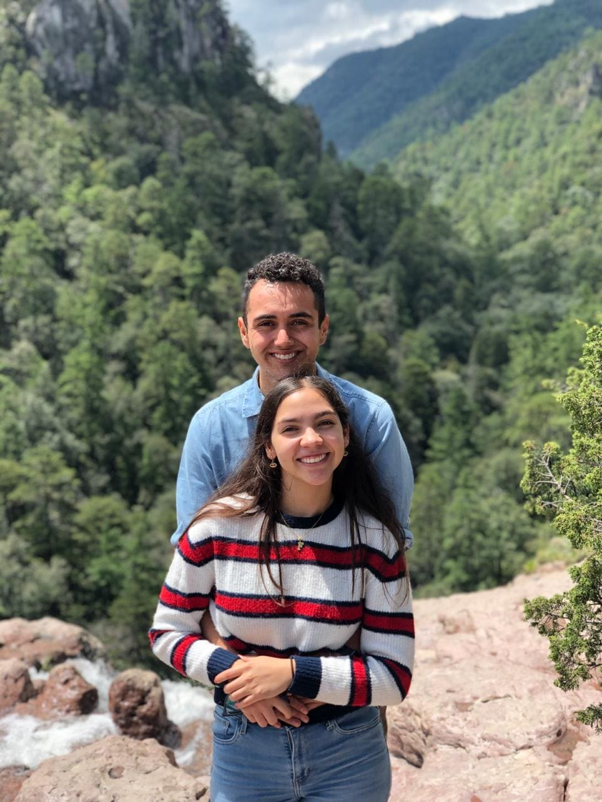
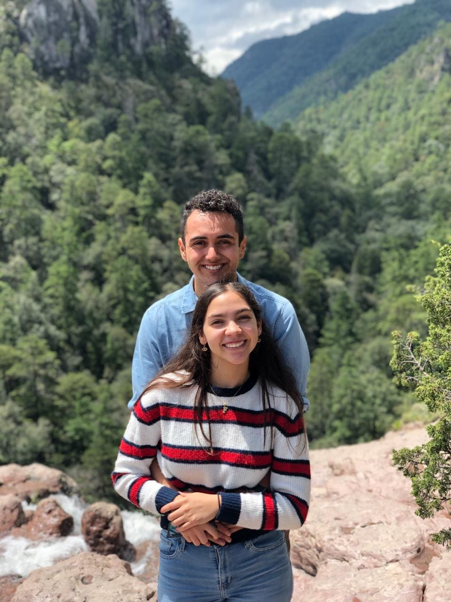
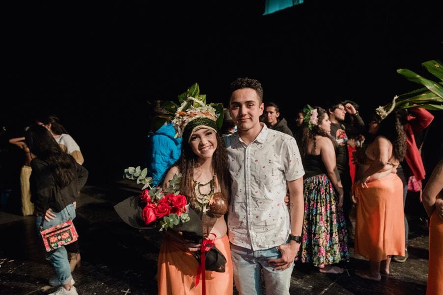
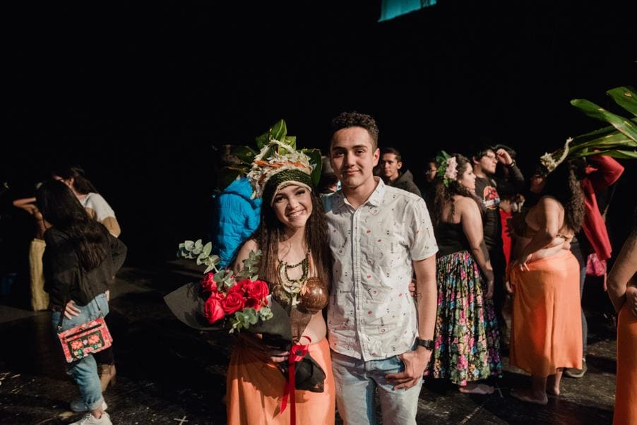

Fernada & Bradley
Una historia de amor
Querido amor de mi vida
Este es un pequeño detalle y recuerdo de nuestro cuarto aniversario, aparte que ya te debía esta pequeña cartita hecha con mucho amor.❤️😘
Hoy estamos celebrando cuatro años juntos, ¡y no puedo evitar sentirme emocionado! Quiero dedicarte unas palabras desde el fondo de mi corazón en este día especial.
Recuerdo cuando te vi en ese salón lleno de hombres, olorosos a patas. Me enamore de la niña mas bonitas que hayan visto mis ojos, y tonto de mi por no haberlo intentado con anterioridad (me equivoque de pastel), primero quise ser tu amigo, y ahí descubrí la linda persona que eres y poco a poco me fui enamorando de ti. Hasta que simplemente decidí intentarlo ya que creí que nunca podría andar contigo, pero henos aquí 4 años después siendo tan felices.
Y como dicen por ahí una foto dice mas que mil palabras, y esta es una foto de cuando cumplimos
un mes y nos la estábamos pasando bomba, ya que siempre que estamos juntos nos la pasamos super
bien y somos muy felices
PD: Que chiquitos nos vemos♥️♥️

No me queda mas que agradecerte por estos cuatro años amor, enserio que soy muy afortunado de tenerte a mi lado, y te amo muchisimo, soy muy feliz ser parte de tu vida al igual que me hace muy feliz que sea parte de mi vida y de mis logros y que me acompañas en cada uno de ellos, eso nos demuestra que somos un gran equipo, gracias por nunca dejarme solo.
Siento muy bonito al ver todas nuestras fotos porque es un viaje al pasado muchos momentos muy bonitos que tuvimos, desde nuestro primer mes, hasta nuestro primer aniversario, cuando nos fuimos de viaje, nuestros blogs de los dadolovers, la mega peda en tequila, porque sabia a juguito de naranja jajaja, y vaya muchas cosas divertidas que hemos pasado, y eso es lo que mas me gusta, que en estos 4 años las peleas o los roces la verdad son mínimos o son por tonterías, eres la persona con la que quiero seguir divirtiéndome y seguir siendo feliz.
 


 
